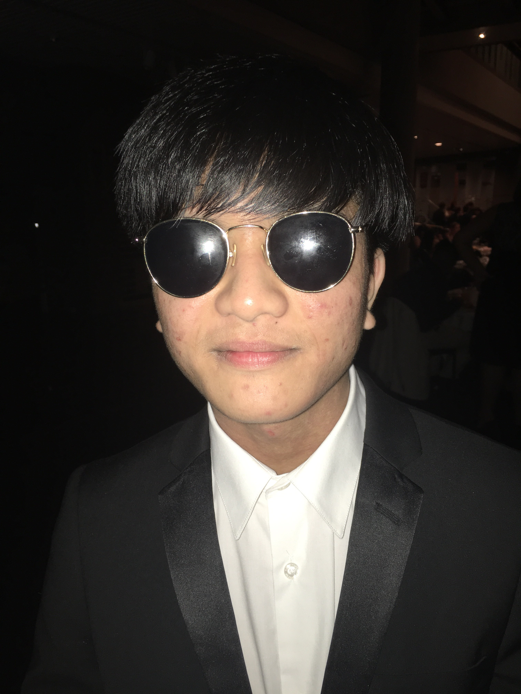
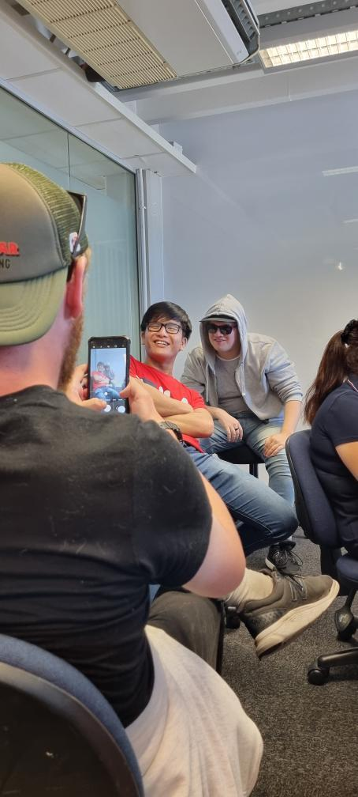
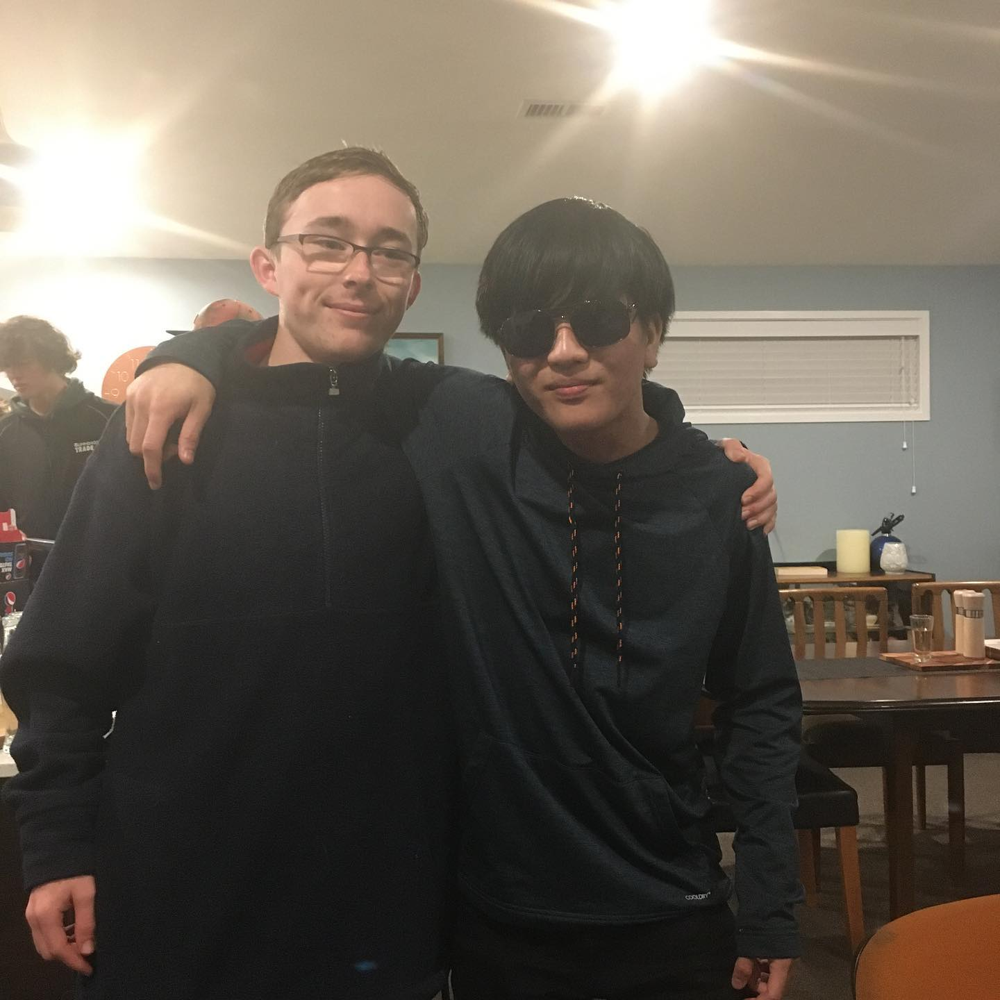
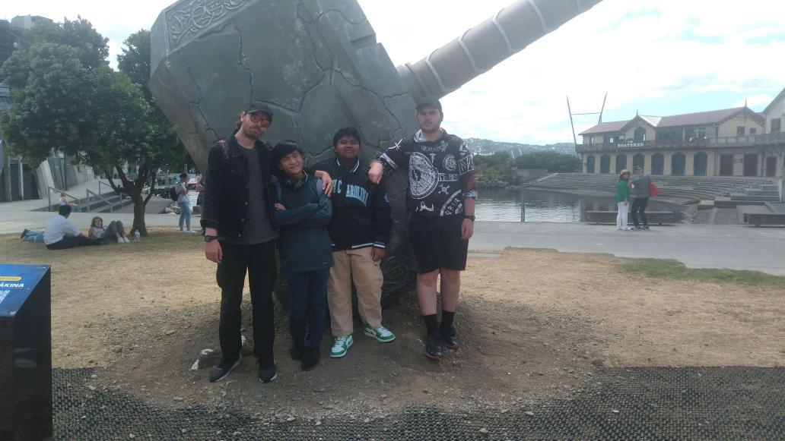

A recent IT graduate with a passion for building — web apps, games, and data tools.

I'm Yutti Chylong, a recently graduated IT student from New Zealand. Over five years of study I worked across a range of areas — from C# and OOP fundamentals to ASP.NET Core web development, Unity game dev, and data analysis with R and SQL Server.
Most of what I know comes from actually making stuff — I built my course projects end-to-end rather than just following tutorials. I picked up patterns like Repository, Dependency Injection, and MVC by using them in real assignments. I'm still early in my career but I pick things up fast and I don't mind jumping into something I haven't seen before.
Outside of study I'm a big gamer. I recently built a deck advisor tool for Slay the Spire 2 as a personal project — just something I wanted to exist and figured I could make myself.
Five years of IT, a ton of projects, and way too many late nights — here's how it went.
Stopwatch and Big O analysis. Dived into Object-Oriented Programming — classes, inheritance, polymorphism, encapsulation, extension methods. Built the PolytechLibrary system modelling books, teachers, and students using real inheritance hierarchies. First steps into Windows Forms GUI with event-driven programming.
FileErrorHandler class, and clean separation of concerns across multiple classes. This was where software architecture really clicked.
Skills built through coursework and personal projects across web development, desktop apps, game dev, and data analysis.
Academic assignments and personal projects built during my studies — spanning web development, desktop apps, game dev, and data analysis.
A single-file HTML tool I built for Slay the Spire 2 in my spare time because I wanted it to exist. It tracks your deck in real-time, scores every card pick using a weighted algorithm, and helps identify your build path across a run — covering 5 characters. Built with pure HTML, CSS, and vanilla JavaScript, no backend or frameworks needed.
Five years went by fast. Here's some proof it was fun.



Interested in working together or want to know more? Grab my CV or send me an email.